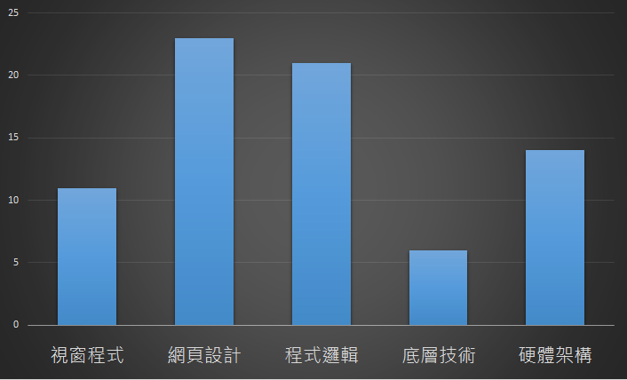
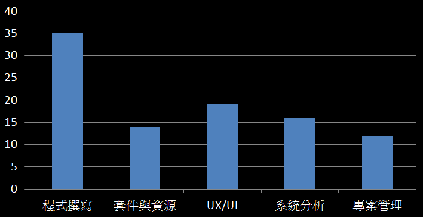

臺師大資訊研究社
104學年度上學期 迎新茶會
SINCE 2015
社團宗旨 現實版
想聚集對資訊有興趣的人，互相交流學習，一同進步，
希望能讓大家在這找到志同道合的朋友。
就是想要在揪團時找得到人啦!!!
幹部介紹
社長組
社長
陳哲雋ㄐㄩㄣˋ(阿哲)
資工105
興趣:桌遊 & 資訊
前桌遊社社長 & 資研社社長
擅長:C++、HTML/CSS、JS、PHP、資安
喜歡玩資訊，喜歡接觸資訊的各種領域，認識新事物就會摸一下，所以知道很多，但不一定都懂很深XD
歡迎和我一起討論研究
副社長
劉慈恩(傻羽、哈內)
資工106
興趣：睡覺
達成在短短兩周內每天醒著的時間不超過五小時(欸
還有各種神奇的睡姿唷0_<
專長：
Python(*´∀`)~♥, HTML, CSS, SQL
略懂:C/C++, JavaScript, php
職業：業餘弄蛇人
大蟒蛇好好玩(*´∀`)~♥
球蟒超可愛der(*´∀`)~♥
python python python python...無限loop♥信蛇蛇得永生
一起來學爬說語吧(*´∀`)~♥
嘶~~~嘶~~~嘶~~~
總務組
總務組長
李方
資工106
興趣：
BL
吃東西(嚼嚼
把人PS到他媽媽認不出來(喂
專長：
…目前貌似是R語言？
要介紹啥？（嚼嚼
人很懶but貌似有自虐傾向把課表填滿
因為專案的關係正在被R語言虐待
火狐什麼的最棒了、IE是什麼可以吃嘛？
總務組長
賴品儒
資工106
興趣：上網、吃吃喝喝
討厭：早起
我只是來打雜衝人數的，有事找李方
雖然來找我也行，但是李方加油ヾ(*´∀｀*)ﾉ
李方：…QAQ
教學組
教學組長
阮韞澂
ㄖㄨㄢˇ ㄩㄣˋ ㄔㄥˊ
資工105

專長：
C#,PHP,ASP,ASP.NET,HTML5+CSS3+JavaScript,SQL
System Analysis,Database Design
職業：C#聖戰士
C# is love,
C# is life.
林品儒
師大貓耳控
資工105
專長：
Ruby, C, C++, Asm
Linux, OpenGL, SDL...諸如此類無法分類
興趣：
遊戲程式設計
研究底層的實作
看貓咪實況
Ruby提供你最自由混沌的程式設計
Programming for fun~~
陳映文
男性
資工105
有接觸過：
Matlab, C, C++, WebGL, JavaScript(jQuery)
興趣：
看羽球
打電影
文書組
文書組長
萬世澤
資工106
興趣：排球、資訊、修圖
專長：C、Photoshop
打排球記得揪!
文書組長
蘇偉傑
資工106
興趣：吃
專長：吃(誤、C++
資訊的世界博大精深,我只是一粒小小的塵埃~
公關組
公關股長
范耿誌(wildsky、野空)
資工106

興趣：
被 linux 玩（無誤）、弄專案、浮誇的特效（esp. pure CSS!!）、不讀不回
討厭：
開會
擅長：
JavaScript
說來慚愧，我只會 Js... QAQ
要跑 MozTW 的找我
要搞專案的找我
JavaScript 一統天下！！
歡迎入 communityNTNU 的坑（會有專人與您聯繫）
社課介紹
感興趣的主題
希望學到的內容
得獎的是
網頁設計!!
網頁的組成
- HTML
- CSS
- JavaScript
課程安排
- 週一 JavaScript
- 週三 HTML5+CSS3
- 週四 進階課程
進階課程
| Git | PL |
| Coding Style | RWD |
| jQuery | .NET MVC5 |
| 也歡迎各位投稿!!! | |
課程安排
每週一、三、四
19:00~21:00
社課開始於9/30(三)
考試前一週與當週停課
請自備筆電
上課地點
週一 樸304
週四 樸305
週三 正302
Lightning Show
5~10分鐘
安排於每次社課尾聲
登記截止於當天18:45
學期活動
| 迎新茶會 | 期初社員大會 |
| 二次迎新 | 定期聚 |
| 主題講座 | 期末社員大會 |
| 寒期訓練 | |
談錢傷感情
但沒錢免談感情
社費:200元
活動 & 講座優惠
期末社員大會小驚喜
歡迎各位加入我們！
| 粉絲頁 | 公開版社團 |

|

|